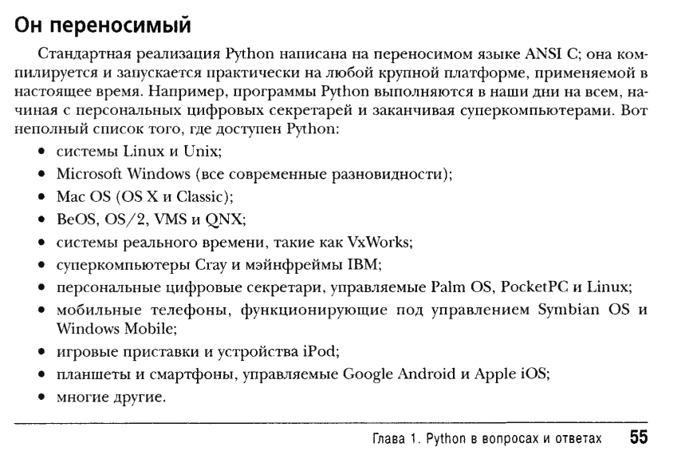
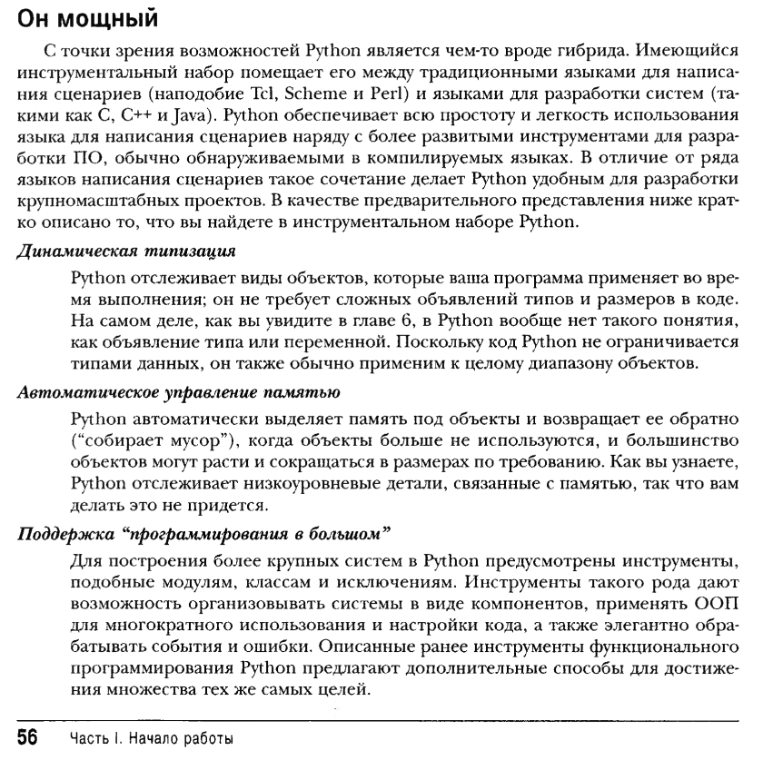
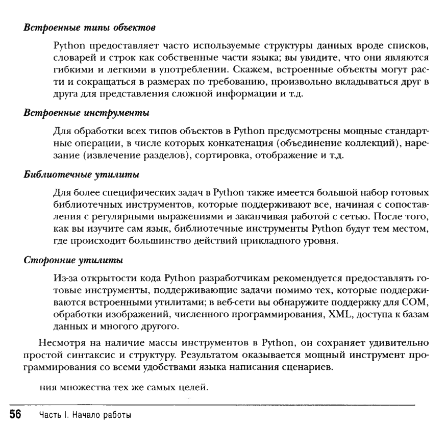

Стр 54
Он объектно-ориентированный и функциональный Python — объектно-ориентированный язык во всех отношениях. Его модель классов поддерживает такие расширенные понятия
  стр 58
Он назван в честь группы "Монти Пайтон”
стр 64
В результате установки Python на машине создается несколько компонентов — минимум интерпретатор и библиотека поддержки.
стр 67
В частности, первым делом он осуществляет компиляцию сценария в то, что называется “байт-кодом”, и направляет его так называемой “виртуальной машине”.
стр 68
Машина PVM — это исполняющий механизм Python; она всегда присутствует в виде части системы Python и представляет собой компонент, который по-настоящему выполняет ваши сценарии. Формально она является просто последним шагом того, что называется “интерпретатор Python”.
стр 69
Во-вторых, байт-код Python не является двоичным машинным кодом (например, инструкциями для процессора Intel или ARM). Байт-код — это представление, специфичное для Python.
стр 70
Строго говоря, во время написания настоящего издания было доступно, по крайней мере, пять реализаций языка Python — CPython, Jython, IronPython, Stackless и PyPy
Jython: Python для Java